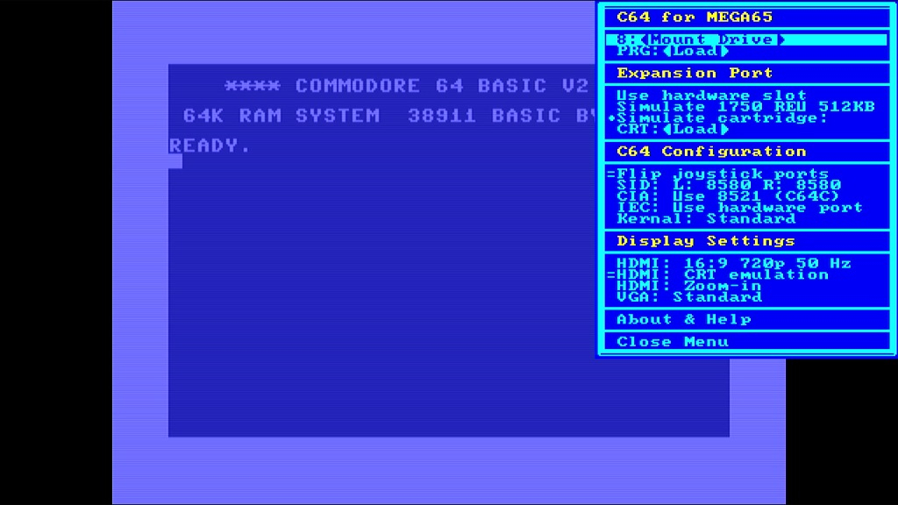
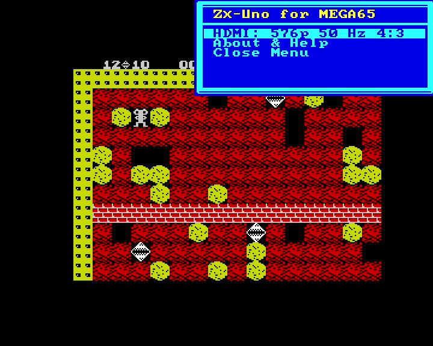
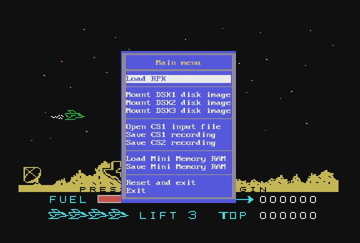

Computer Cores
Cores Available for all MEGA65
Commodore 64 (C64)

https://en.wikipedia.org/wiki/Commodore_64
The Commodore 64 is a personal computer released in 1982. It is the precursor of the (unreleased) C65 which is the machine the MEGA65 is recreating. It is usually abbreviated as just C64.
The core for the C64 is nearly 100% compatible to a real C64. Hardware like cartridges and floppy drives can be plugged into the MEGA65 and will work. The core can load disk images (.d64 files) and cartridge images (.crt files) from any of the two SD Cards in the MEGA65. Tape images are not supported. The Core only supports a PAL C64 system. Programs that only work correctly on NTSC (USA/Japan) systems are not compatible. Please see all details in the documentation.
The Core is available in versions for R3 and R6 boards.
Download the Core on the MEGA65 filehost: https://files.mega65.org/?id=896a012f-59e4-456c-b91f-7e989b958241
The Core discussion on Discord: https://discord.com/channels/719326990221574164/794775503818588200
The Core issue tracker on Github: https://github.com/MJoergen/C64MEGA65/issues
ZX Spectrum

https://en.wikipedia.org/wiki/ZX_Spectrum
The ZX Spectrum is a home computer released in 1982.
The ZX Spectrum Core for the MEGA65 is a port of the ZX-UNO project to the MEGA65 framework. It needs to be carefully setup and requires specific files and directories on the SD Card. It can run most ZX Spectrum software and uses .tap files. The Core is not as user-friendly as the C64 core, as the Spectrum uses a different keyboard layout, has specific options for Joysticks (the original ZX Spectrum did not have a joystick port so games have options for different hardware extensions) and sometimes need some extra help in configuring specific games.
The Core is available in versions for R3 and R6 boards
Read the instructions for proper SD Card setup: https://github.com/sy2002/zxuno4mega65/wiki/Getting-Started
Download the Core on the MEGA65 filehost:
https://files.mega65.org?id=bdaeb7e0-9fc8-4185-99de-104d01229f27
Discuss the Core in the Alternate Cores channel on Discord:
https://discord.com/channels/719326990221574164/1177364456896999485
The Core issue tracker on Github:
https://github.com/sy2002/zxuno4mega65/issues
TI 99/4A

https://en.wikipedia.org/wiki/TI-99/4A
The TI-99/4A is a personal computer released in 1981 by Texas Instruments with a unique internal design and extensiblity by cartridges.
The core is written from scratch specifically with the MEGA65 as its target. It tries to match the timing of the original TI-99/4A as closely as possible, but also features a 36x turbo mode, where the TMS9900 runs at 108 MHz. Setup requires some extra files, please check the instructions provided in the README.MD file in the download.
This Core is not fully compatible with all HDMI monitors or HDMI grabbers. It outputs a signal with 486 lines (not 480 as usual). If you followed the instructions and just see a black screen, please change the monitor, unplug your HDMI grabber or use a CRT on the VGA connector.
Download the Core on the MEGA65 filehost: https://files.mega65.org?id=a25ce133-ed07-4ef7-8495-179d69c43ed0
The Core discussion on Forum64: https://www.forum64.de/index.php?thread/151162-mega99-a-ti-99-4a-core-for-the-mega65/
The Core issue tracker on Github: https://github.com/zeldin/Mega99/issues
Cores still in Development
Amiga
An Amiga core has started development, but currently there is nothing to try out. Please check the Discord for current development news.
https://discord.com/channels/719326990221574164/1313409877393276948
Apple II

https://en.wikipedia.org/wiki/Apple_II_(original)
The Apple II is a personal computer released in 1977. A core is in development, but not available yet.
https://github.com/lydon42/Apple-II_MEGA65
Commodore PET machines
A “proof of concept” Core is and running but far from usable. You can find the current state at:
https://github.com/Rhialto/PET_MEGA65
VIC-20 / VC-20

https://en.wikipedia.org/wiki/VIC-20
The VIC-20 (called VC20 in Europe) is a personal computer released in 1980/81. A core is in development, but not available yet.